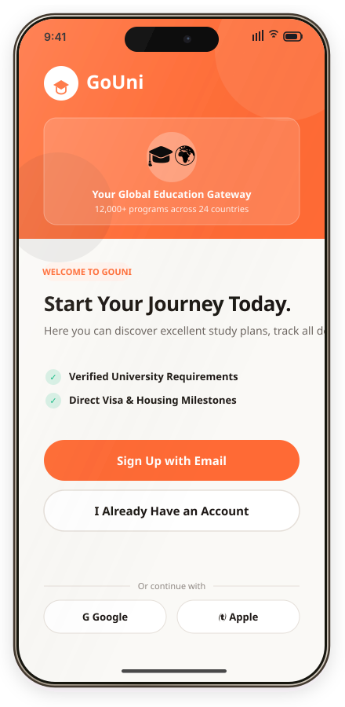
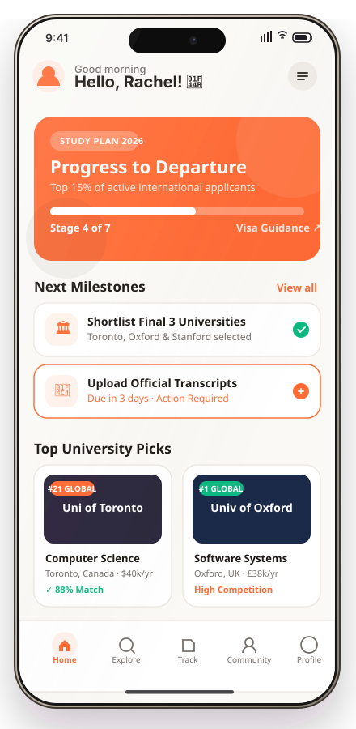

GoUni — Study-Abroad Higher Education Platform
“Guiding international students through global university discovery, comparative evaluation, and application milestones with cognitive clarity.”
GoUni is a student-centered digital application designed to eliminate decision paralysis and administrative friction for international applicants. Through qualitative student interviews, 6-stage journey mapping, and a production-grade Figma design system, GoUni streamlines university filtering, course comparisons, visa compliance, and certified document tracking into a unified, reassuring mobile interface.
Information Overload & Friction
International university application portals present disjointed criteria, confusing grade-conversion systems, and opaque tuition fees. Students reported severe decision fatigue and anxiety when comparing multi-country alternatives.
Student Journey Mapping
Conducted qualitative interviews with prospective applicants to uncover emotional pain points: eligibility ambiguity, hidden living expenses, and fear of missing deadlines. Synthesized insights into a 6-stage experiential journey map.
Solo Ownership & Systems Architecture
Individual academic project. Led the complete design lifecycle: qualitative student interviews, 6-stage journey map storyboards, information architecture, Figma design tokens, atomic component variant library (with Auto-Layout 5.0), and interactive prototyping.
Progressive Flows & Figma Tokens
Structured onboarding into a 3-tier progressive discovery model (search, side-by-side comparison, milestone tracking). Established an atomic Figma token library with variables, typographic rules, and Auto-Layout 5.0 multi-state component variants.
Task Completion Validation
Evaluated prototypes through think-aloud usability testing sessions with student participants. Users completed university filtering, program comparisons, and application checklists with noticeable ease and confidence, confirming that progressive disclosure resolved initial decision fatigue.
Cognitive Clarity & Scalability
Delivered an empathetic student support platform backed by a production-ready design token architecture that bridges design-to-code alignment and reduces cognitive burden during high-stakes life decisions.





Inside GoUni
A closer look at the end-to-end interface designed to support international applicants at each stage of their journey. Click any screen below to open an interactive full-resolution inspection view with complete design rationale.
Welcome & Threshold Verification
Welcomes prospective international applicants with verified threshold requirements, value propositions, and frictionless account creation.
Inspect Screen 🔍
University & Course Discovery
Country filter pills, search autocompletion, QS World Rankings, and tuition fee estimates to combat comparison fatigue.
 Inspect Screen 🔍
Inspect Screen 🔍
Academic Thresholds & Cost Breakdown
Comprehensive program specifications, living expense calculators in Toronto, and single-click application checklist enrollment.
Student Dashboard & Roadmap
Consolidated student timeline tracking multi-university offer status, CAS milestones, and 52% overall departure readiness.
Inspect Screen 🔍
Document Upload & Verification
Certified document vault with automatic transcript checking, passport validation, and real-time bank solvency tracking.
Inspect Screen 🔍
Visa Guidance & Compliance
Step-by-step guidance for Tier 4 / student visa requirements, VFS Global biometrics, and mandatory funds maintenance calculators.
 Inspect Screen 🔍
Inspect Screen 🔍
Student Housing Finder
Curated on-campus halls and vetted private apartments sorted by commute distance to faculties and student budget.
 Inspect Screen 🔍
Inspect Screen 🔍
Cohort Community & Mentorship
Connecting incoming international students with city cohort discussion channels and verified senior alumni mentors.